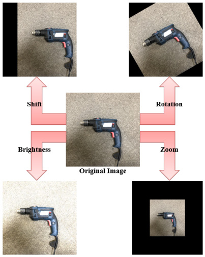

Case study · Computer Vision
Construction Site Hazard Detection
Recognizing the small tools that cause accidents on construction sites — defining the object classes, collecting real-site data under messy camera conditions, training detection models, and testing whether augmentation actually helps. My first machine learning research, as a civil-engineering undergrad.
- Role
- Undergraduate Researcher · Construction Systems Lab, Inha University
- Timeline
- 2019 – 2020
- Stack
- Python · YOLO · CNN · Computer Vision
- Focus
- Problem definition · Real-world data · Data-centric ML
01. Problem
Indoor construction sites are littered with small tools — hammers, shovels, electric drills, spanners — that get left lying around and cause accidents. The lab's broader goal was to automate safety-rule checking, which first requires recognizing these objects from site imagery.
That recognition is harder than it sounds. It's data-hungry, real site footage is messy (varied distance, angle, occlusion, lighting), and labeled images of these small objects are scarce. So the work split into two real questions: collect data that reflects actual site conditions, and figure out whether augmentation actually closes the data gap.
02. What I did
-
Grounded the problem
Chose which hazard objects to recognize based on construction standards (standard specifications and quantity-per-unit references), so the task reflected the tools actually found on site rather than an arbitrary list.
-
Collected real-site data
Spent much of the project shooting images across real environments — soil, sidewalk block, asphalt, indoor sites — deliberately spanning the conditions that break recognition: distance, angle, occlusion, and lighting. This was the slow, unglamorous part, and the part that mattered most.
-
Trained detection & recognition models
Got a YOLO-based object detector training and running on the collected data — checking results qualitatively on real site footage — alongside a CNN classifier for the individual objects. I ran the project end to end: collection, labeling, training, and the augmentation study.
-
Tested whether augmentation actually helps
Rather than assume augmentation is free accuracy, I ran a controlled study (published): four augmentations combined two at a time into six training sets (A–F) on a 4,000-image, four-class benchmark, each compared against the un-augmented baseline.

03. Results
85.7%
baseline, no augmentation
87.6%
best set (brightness + zoom)
+1.9%
max accuracy gain
| Training set | Accuracy |
|---|---|
| Baseline (none) | 85.7% |
| A · rotation + shift | 85.1% |
| B · rotation + brightness | 86.9% |
| C · brightness + shift | 85.8% |
| D · rotation + zoom | 85.7% |
| E · shift + zoom | 87.3% |
| F · brightness + zoom | 87.6% |
- Augmentation lifted accuracy by +0.7% on average, up to +1.9% — modest, but consistent where it counted. Zoom-based sets (E, F) helped most.
- Rotation-heavy sets (A, D) didn't reliably improve, suggesting rotation is a poor fit for these small, orientation-stable objects — a more useful takeaway than the headline number.
04. Context
This recognition work fed a larger lab effort toward a digital-twin system for automated safety-rule checking; the point-cloud, BIM, and digital-twin pieces were other researchers' work, not mine.
It was my first hands-on machine-learning research, and I came to it from civil engineering. As a kid I'd stayed up late on robot programming, drawn to the idea of teaching a machine from data, so I added a software-convergence double major — and as I learned, it clicked that this applied far beyond robots, anywhere data piles up. That curiosity is what pushed me to join this lab as an undergraduate researcher. It's where ML stopped being a class and became something I'd build a career on: I learned the parts that actually matter — framing a problem worth solving, collecting data that survives the real world, and asking whether a result is meaningful instead of just reporting it.
What I'd do differently: I judged the detector by eye. Today I'd measure it properly — track mAP and run a real validation rather than trusting a visual impression — and evaluate augmentation on the detection task itself, across more realistic site conditions.
C. W. Jeon, J. Seo, E. D. Lee, M. Chung, K. Lee, D. H. Shin. Image Augmentation for Small Object Detection on Indoor Construction Site. Supported by the National Research Foundation of Korea (NRF-2019R1A2C1088824).